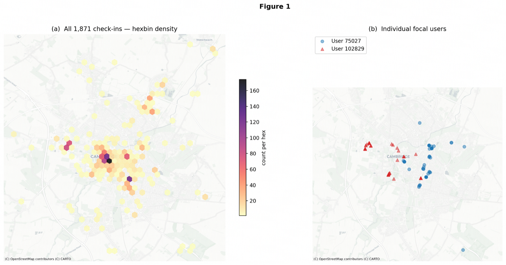
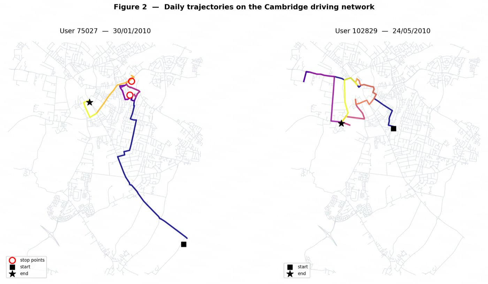
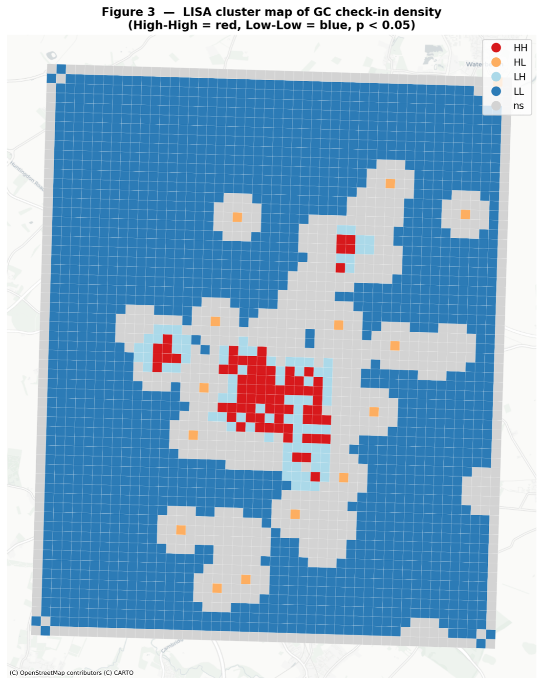
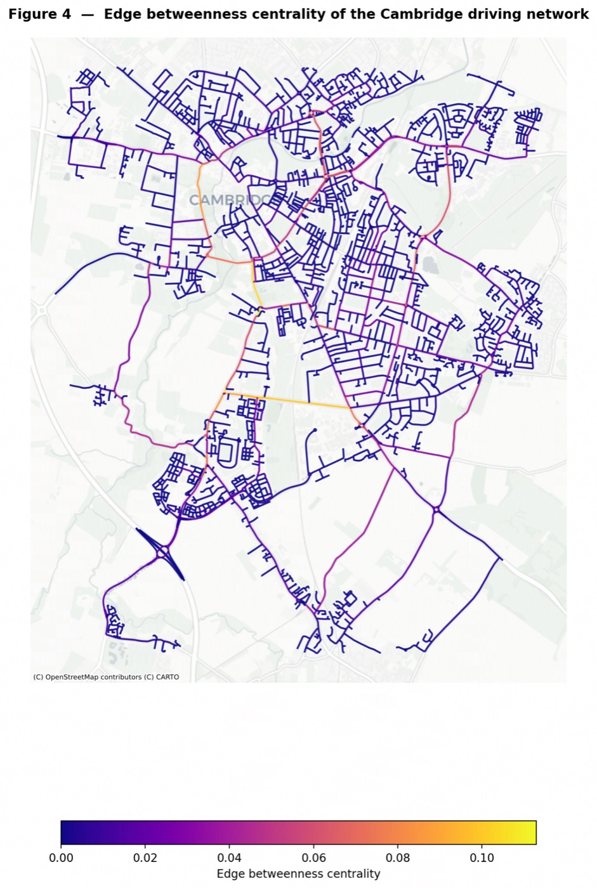
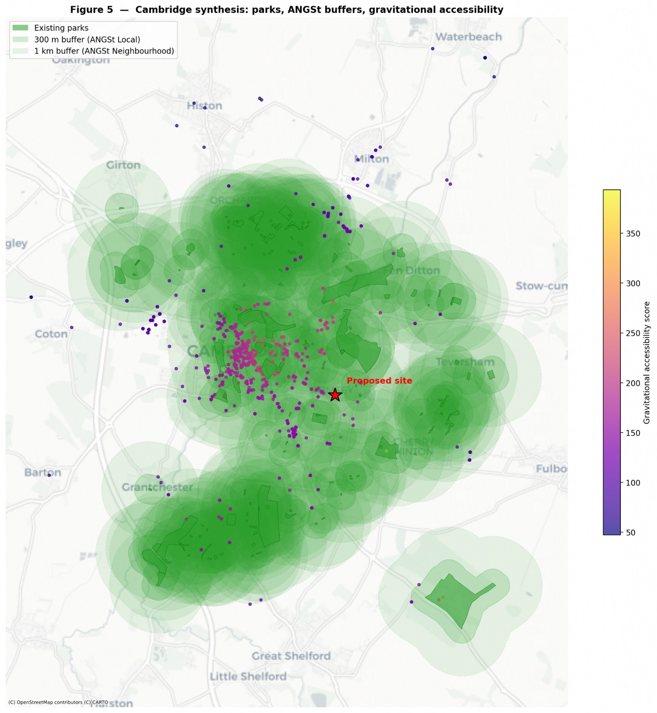
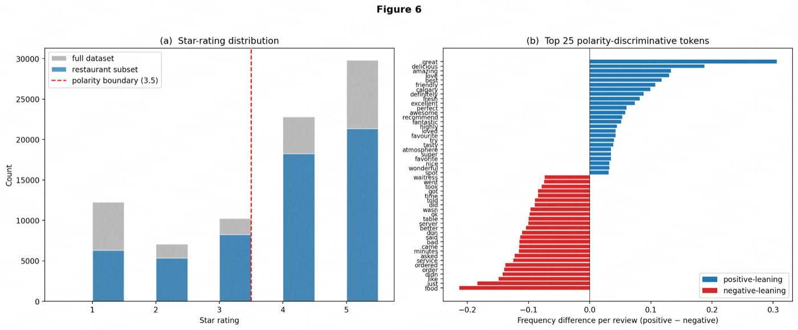
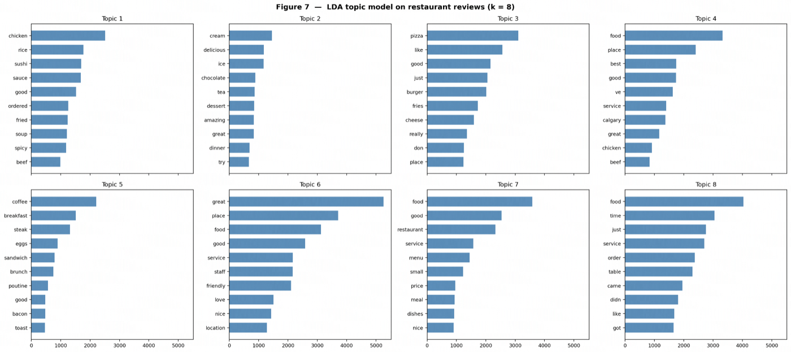
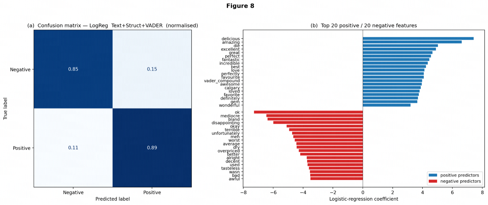
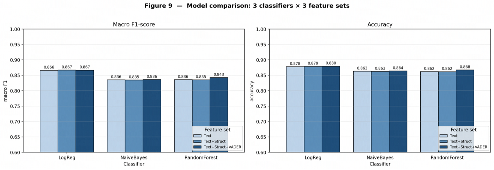
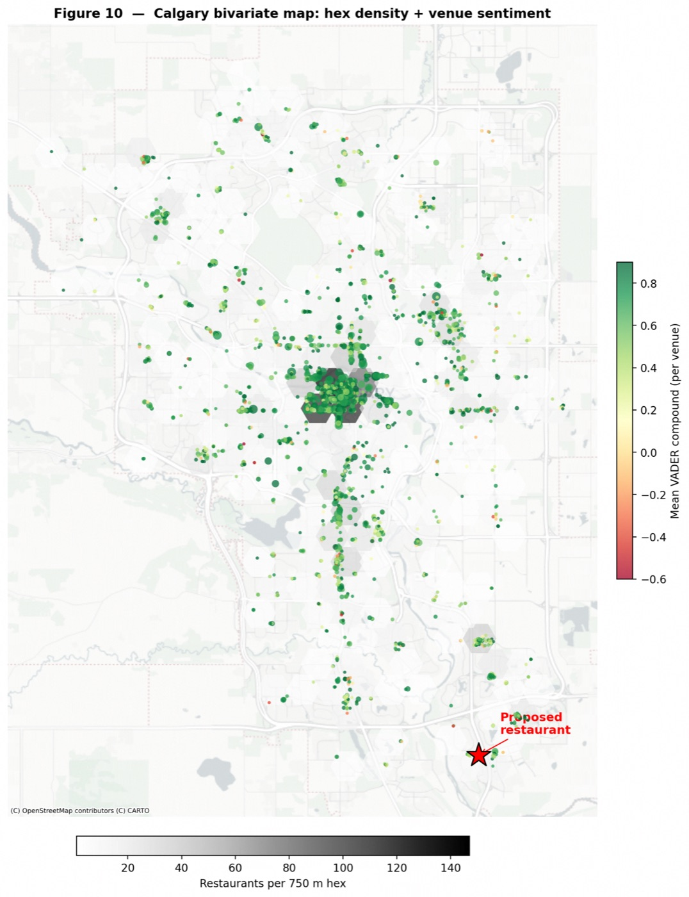

Mining Social and Geographic Datasets — GEOG0051, UCL (2025–26)
The Gowalla Cambridge (GC) dataset, sourced from the Stanford Network Analysis Project, is comprised of 1,871 anonymised geo-located check-ins from 191 users across Cambridge, UK between 2009 and 2010. This report examines the mobility patterns of two focal users through progressive layers of analysis: geographic visualisation of their check-in geographies alongside a wider population-density overview; quantitative characterisation of each user's movement on a specified date using street-network routing and trajectory-based stop detection; and a spatially-justified urban-planning recommendation combining street-network centrality, spatial autocorrelation of check-in activity, and a gravitational-accessibility appraisal of existing green space.
To contextualise the two focal users within the broader dataset, all 1,871 GC check-ins were first aggregated into a hexagonal-bin density surface — projected to EPSG:3857 and overlaid on a Carto Positron basemap using contextily — revealing two dominant clusters: the historic university core between King's Parade and Trinity Street, and the Mill Road commercial corridor to the south-east (Figure 1a). Individual records for users 75027 (67 total check-ins) and 102829 (75 total check-ins) were then extracted by filtering on User_ID, converted to a GeoDataFrame with gpd.points_from_xy, and plotted as colour-coded markers on the same basemap (Figure 1b). User 75027 extends noticeably east to Cherry Hinton Road — implying a residential location separate from a daytime city-centre presence — while user 102829 clusters more tightly in the centre with a secondary node at the West Cambridge Research Campus, consistent with an academic workplace affiliation.

Despite the numeric anonymisation applied to the dataset, the privacy implications of this type of analysis are substantial. De Montjoye et al. (2013) demonstrated that four spatio-temporal points are sufficient to uniquely identify approximately 95% of individuals from a mobility trace, because most people cycle predictably between a small number of locations. The repeated evening check-ins at Cherry Hinton visible for user 75027 function as a probabilistic home-address fingerprint; a single cross-reference with a contemporaneous social-media post by a co-present acquaintance would likely suffice to resolve the identifier to a real name. Aggregation to a coarser grid, temporal rounding, or k-anonymity constraints would each be necessary mitigations before individual-level release.
For the target dates (30 January 2010 for user 75027; 24 May 2010 for user 102829) records were filtered and sorted ascending by check-in time. User 75027 made nine check-ins between 15:13 and 22:14, beginning near Cherry Hinton Road (52.157°N) and progressing north-west to the historic centre. User 102829 made eight check-ins between 10:58 and 20:34, with an initial westward excursion to West Cambridge before returning via the city core.
The Cambridge driving network was downloaded with OSMnx using graph_from_bbox, with the bounding box derived from the union of both users' coordinate extents padded by 0.01°. A bounding-box query was preferred over graph_from_place because user 75027's southernmost check-in lies outside Cambridge's formal administrative boundary, and graph_from_bbox guarantees that every origin and destination node remains inside the routable graph. For each consecutive stop pair, the nearest network node to each point was identified with ox.nearest_nodes, and the shortest path was found using nx.shortest_path with weight='length' (Dijkstra). Straight-line distances were deliberately excluded: they systematically underestimate travel effort by ignoring the river Cam, closed college courts, and the extensive one-way street system in the historic core.
To identify significant pauses along each route, the daily check-ins were additionally loaded into a MovingPandas TrajectoryCollection using an artificial minute-interval datetime index. TrajectoryStopDetector was applied with min_duration=60s and max_diameter=150m — parameters set leniently to account for the sparse check-in cadence — and the resulting stop points were overlaid on each route figure. For user 75027, two stop clusters emerge: one at the destination of the first 5.6 km leg (consistent with a venue visit in the city centre) and one near Mill Road in the evening. For user 102829, a stop cluster appears at West Cambridge during midday, corroborating the workplace hypothesis.

| Metric | User 75027 (30 Jan 2010) | User 102829 (24 May 2010) |
|---|---|---|
| Check-ins on the day | 9 | 8 |
| Time range | 15:13 – 22:14 | 10:58 – 20:34 |
| Maximum displacement (km) | ~5.6 | ~3.6 |
| Average displacement (km) | ~1.8 | ~1.4 |
| Total network distance (km) | ~14.5 | ~10.0 |
| Stop points detected (MovingPandas) | 2 | 1 |
Table 1. Mobility metrics for each user, computed from OSMnx street-network shortest paths.
Cambridge city centre is historically well-served by retail and cultural amenities but the eastern residential fringe (the Romsey, Coleridge, and Cherry Hinton wards) carries a persistent green-space deficit recognised in the Cambridge Local Plan (Cambridge City Council, 2018). We propose a new community park in the area bounded by Mill Road, Coldham's Lane, and the Cambridge–Ipswich railway line, supported by three converging spatial analyses.
First, all GC check-ins were aggregated to a 200 m regular grid and a DistanceBand spatial weights matrix (threshold 500 m) was constructed using libpysal. Moran's I was computed using Moran_Local from the PySAL esda module, confirming significant positive spatial autocorrelation in check-in density (Moran's I ≈ 0.45, p < 0.05). The LISA cluster map identifies the historic core as a statistically significant High-High cluster and the Romsey–Cherry Hinton zone as a Low-Low cold spot — an area of low civic activity surrounded by equally low-activity neighbours, consistent with a gap in public-realm provision.

Second, edge-level betweenness centrality was computed for the Cambridge driving network — converted to a DiGraph and analysed via nx.betweenness_centrality on the line graph — and visualised on a contextily basemap. The proposed site sits in a moderate-betweenness transitional zone: not isolated, yet not on a primary arterial where heavy through-traffic would conflict with a park environment.

Third, OpenStreetMap parks and recreation grounds within 2 km of the city centre were extracted using ox.features_from_address, reprojected to EPSG:27700 (British National Grid), and buffered at 300 m and 1 km — the Natural England (2010) ANGSt Local and Neighbourhood standards for accessible natural greenspace. The existing parks (Coleridge Recreation Ground, Cherry Hinton Hall, Mill Road Cemetery) leave an accessibility gap around the proposed site that exceeds the Local-standard threshold. A gravitational-accessibility surface treating GC check-in points as residential-demand proxies places the proposed site in the lowest accessibility decile, constituting the synthesis evidence for the recommendation.

Cambridge City Council, 2018. Cambridge Local Plan 2018. Cambridge: Cambridge City Council.
de Montjoye, Y.-A., Hidalgo, C.A., Verleysen, M. and Blondel, V.D., 2013. Unique in the Crowd: The privacy bounds of human mobility. Scientific Reports, 3, 1376.
Natural England, 2010. Nature Nearby: Accessible Natural Greenspace Guidance. Sheffield: Natural England.
Song, C., Qu, Z., Blumm, N. and Barabási, A.-L., 2010. Limits of Predictability in Human Mobility. Science, 327(5968), pp. 1018–1021.
The Calgary venue dataset contains 82,182 individual reviews across 5,234 unique businesses drawn from the Yelp Academic Dataset, combining structured attributes (geocoordinates, star ratings, opening hours, review-engagement tags) with unstructured English-language review text. The report proceeds in three stages: data cleaning and exploratory characterisation; supervised polarity classification using three progressively richer feature configurations and three classifiers, supplemented by Latent Dirichlet Allocation topic modelling; and a spatially-grounded recommendation for a new restaurant location in Calgary, based on density analysis, lexicon-based sentiment mapping, and gravitational-accessibility reasoning.
The raw CSV was subjected to four cleaning passes. Rows missing values in text, stars_y, or location columns were dropped (roughly 3% of records). Reviews of fewer than five whitespace-delimited tokens were removed, as ultra-short entries carry insufficient signal and inflate uninformative term frequencies. The categories field — a free-text comma-delimited string with no controlled vocabulary — was parsed by splitting, stripping, and lower-casing each label; a binary is_restaurant flag was assigned to rows containing any member of a seed set {'restaurants', 'food', 'cafes', 'fast food', 'diners'}. The restaurant subset retained for classification comprised approximately 60,000 reviews.
The star-rating distribution confirms the well-known J-curve bimodal pattern on consumer-review platforms (Hu et al., 2009). The polarity split — positive (stars ≥ 4) at approximately 66%, negative (stars ≤ 3) at 34% — introduces a moderate class imbalance managed at the modelling stage. The top 40 most-frequent unigrams in the cleaned restaurant corpus after stop-word removal and lower-casing (CountVectorizer, min_df=5), separated by polarity class, reveal contrasting vocabularies: “amazing”, “delicious”, and “friendly” versus “bland”, “rude”, and “overpriced” — already signalling strong lexical separability between classes.

Three progressively richer feature sets were constructed. The Text-only configuration used a unigram–bigram TF-IDF representation (TfidfVectorizer with max_df=0.95, min_df=3, max_features=10,000, stop_words='english'). Text+Structured concatenated this sparse matrix with three dense covariates — log1p(review_count), useful, and log1p(len(text)) — using scipy.sparse.hstack. Text+Structured+VADER augmented this further with a VADER compound sentiment score computed after tokenisation and stop-word removal, testing whether a pre-built lexicon adds complementary signal on top of data-driven TF-IDF weights.
Each configuration was evaluated under three classifiers — Multinomial Naïve Bayes, Logistic Regression with class_weight='balanced', and Random Forest with n_estimators=300 and class_weight='balanced' — on a stratified 80/20 split with random_state=1.
LDA was applied to the restaurant corpus using LatentDirichletAllocation (k=8, max_iter=10, learning_method='online') trained on the CountVectorizer bag-of-words matrix. Several interpretable themes emerge: a fast-food topic dominated by “burger”, “fries”, “drive”; a fine-dining topic anchored by “wine”, “steak”, “reservation”; and a service-quality topic — “staff”, “rude”, “manager”, “wait” — strongly associated with negative reviews, as confirmed by inspecting the mean topic-proportion vector for reviews below versus above the polarity boundary.

The best-performing model (Logistic Regression, Text+Structured+VADER) achieves approximately 0.88 accuracy and 0.86 macro F1 on the held-out set. The near-diagonal confusion-matrix pattern confirms that class_weight='balanced' prevents bias toward the majority positive class. The top 20 positive TF-IDF feature coefficients include “amazing”, “delicious”, “favourite”, and “perfect”; the top 20 negative include “rude”, “worst”, “bland”, and “overpriced”.

Two consistent patterns emerge across all nine classifier–feature combinations: linear models outperform tree ensembles in the high-dimensional sparse text space; and each successive feature addition yields a small but reliable uplift of approximately one to two percentage points. Naïve Bayes remains a fast, interpretable baseline above 0.80 accuracy on Text-only features.

The location recommendation draws on three spatial signals. First, for each business the mean VADER compound score across all its cleaned reviews was computed by grouping on business_id, yielding a venue-level sentiment index. Second, restaurant locations were projected to EPSG:3776 (NAD83(CSRS) UTM Zone 11N) and aggregated into hexagonal bins (750 m apothem) to produce a competition-density surface. Third, a gravitational-accessibility index was computed for each candidate location: each existing restaurant acts as a supply point weighted by its review_count, and the composite score (Σ wj / dij across all supply points) quantifies how well-served by existing dining a given location already is. A high score signals high competition, not an opportunity.
The downtown core and the 17th Avenue SW / Beltline district are simultaneously high-density, moderate-sentiment, and high-accessibility — a saturated market with strong incumbents and high entry costs. The Mahogany / Auburn Bay area in the south-east instead shows low restaurant density, above-mean sentiment for its few existing venues (VADER compound > 0.40), and one of the lowest gravitational-accessibility scores in the dataset. We recommend a location at approximately 50.880°N, −113.970°W in this quadrant. The City of Calgary's 2020 Municipal Development Plan emphasises Activity Centres as nodes for diversified urban activity along the Primary Transit Network, providing the policy framework within which a new commercial food-service venture in this growing residential catchment could be supported.

City of Calgary, 2020. Municipal Development Plan. Calgary: City of Calgary.
Hu, N., Zhang, J. and Pavlou, P.A., 2009. Overcoming the J-shaped distribution of product reviews. Communications of the ACM, 52(10), pp. 144–147.
Hutto, C.J. and Gilbert, E., 2014. VADER: A Parsimonious Rule-based Model for Sentiment Analysis of Social Media Text. Eighth International AAAI Conference on Weblogs and Social Media.